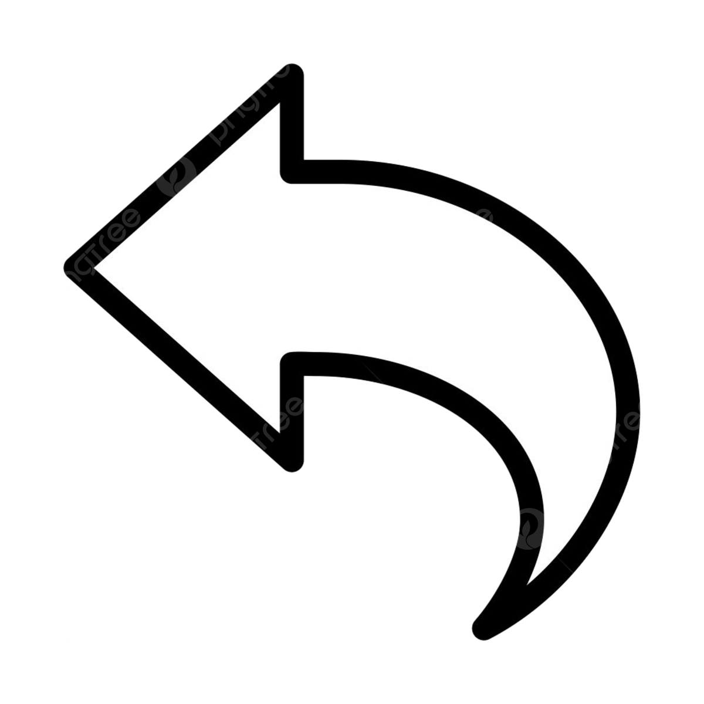

Programming Languages


Back


In my opinion, Python has been the most interesting language so far. I have an interest in Physics, Maths, Music and Gaming - all of which can be experimented with using Python. My University course does not teach Python, but after seeing all of its powerful capabilities, I started learning online using coding websites and Youtube videos. I have made basic Platformer Games, Physics Calculators, a MIDI Generator, a simple drum machine, and quite a few other things.
While completing the technical interview for a potential job, I was asked to create an IOS app in Flutter. Flutter is the framework, within which Dart is the programming language. While I may not be very experienced yet, I really enjoyed learning about Dart, and pushing myself to add new features. I was also able to get the app to run on my IPhone in profile mode, which felt great. Here is an example of my IOS app.

JavaScript is probably the language I am least familiar with, but can still appreciate its capabilities and am able to perform more basic functions using it.
I am trying to implement more Javascript in my website projects to expand my knowledge.
The JustIT course took me outside my comfort zone, and forced me to learn more about JavaScript. As a result, I have implemented
numerous JS features on this website, and others that I have been working on. For example within in this site - Night Mode, Clock, Rainbow Animated "Sandy's Desktop"
and the Double Click features to make the pages of the website seem more like desktop apps.

I used Java for my Introduction to Programming module in first year, but have not used it since.
At the time I was able to create a basic programme for a flower shop, where customers could choose from different sizes and different coloured bouquets.
As I haven't used it again since then, I feel that I would need a bit of time to reacquaint myself with the syntax, but my general understanding of computational logic has improved since then.

I started learning HTML during a Web Authoring module in my University course.
I enjoyed the module so much that I deleted my "Wix" website and decided to recreate it from scratch.
Though I feel like there will always be something new to learn, I am comfortable in HTML and am able to troubleshoot
any problems myself to find a solution.
The additional experience I have gained throughout the JustIT course has been invaluable, and has been more than just a refresher.
I now feel like I could be left alone to create a website to a specification and would have no issues.

My experience with CSS also started during my Web Authoring module.
I absolutely love the creative freedom it gives and have been challenging myself to
learn more by finding elements of websites that look appealing and trying to replicate them.
Again, the JustIT course has given me more time and experience in CSS - specifically with making this site.
I found a framework online that gave a near-identical Windows 98 design, but instead opted to create my own Doors 95
and the experience has been a lot more enjoyable.

I got a chance to explore SQL during my Databases module, I think with a bit more practice of normalised forms I would feel very comfortable.
The actual SQL code itself is quite easy to understand and modify.
I hope to get some more practice in before my Advanced Databases module.
The additional SQL practice within the JustIT course, though brief, has taught me more than I was able to learn during a full 10 week module at
University. I now feel comfortable creating entity relationship diagrams, and with creating and querying databases.